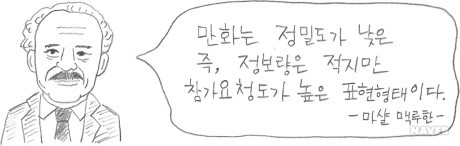
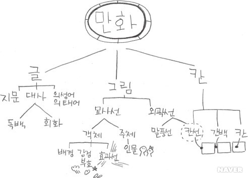
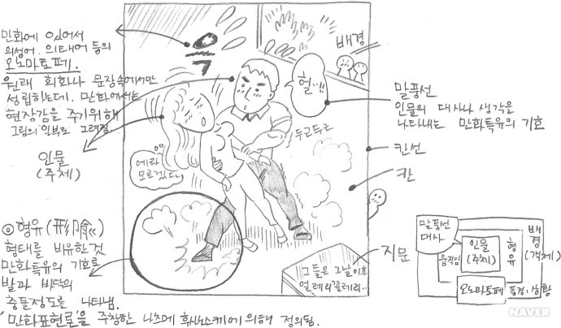
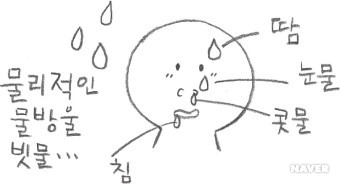
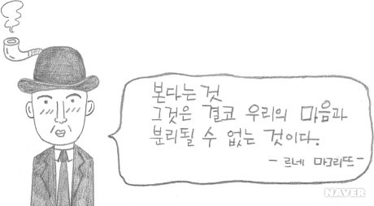

만화가는 완성된 자신의 작품을 바라보며 두 가지의 소망을 가질 것이다. 하나는 독자들이 자신이 만들어낸 이야기를 제대로 이해해주기를 바랄 것이고 또 하나는 자신의 이야기를 중간에 그만두지 않고 끝까지 읽어주길 바랄 것이다. 이 두 가지 소망을 이루기 위해서 만화가는 자신의 작품을 그릴 때 명확성을 가지고 독자와 소통하는 방법을 고심해야 하며, 작품의 어느 요소들이 독자를 머물게 하는지를 연구해야 한다.
랜덜 P.해리슨도 이러한 만화의 커뮤니케이션 입장을 강조했다. 그의 말에 의하면, “만화는 하나의 ‘형태(form)’이다. 그러나 그것은 ‘동화하는(conform)’ 것이 아니라 ‘변형시키는(deform)것’ 으로 그렇게 함으로써 그것은 ‘전달하는(inform)’ 것이다.라고 주장하였다.
만화에 표현된 모든 것들은 그것을 제작한 만화가가 만들어낸 고유의 기호체계이다. 만화는 그림과 글과 칸의 전개로 메시지를 전달하는데, 만화가는 등장인물, 배경, 소품 등과 같은 표면적인 것들로부터 등장인물의 동작, 표정, 반응, 감정 등과 같은 스토리를 이끌어가는 모든 요소들을 자기방식으로 재구성한다. 우리가 만화를 읽는다는 것은 만화가가 만들어낸 다양한 그래픽 이미지, 즉 기호(Code)들을 우리가 가진 지식과 독서경험 등을 통해 해독(Decode)하는 작용인 것이다. 이처럼 만화는 기호, 내용, 그리고 표현 스타일에 의하여 묘사될 수 있는 하나의 메시지일 뿐만 아니라 보다 광범위한 커뮤니케이션 상황 속에서 작용하는 기호체계임을 잊지 말아야 한다.
 인간은 사물이나 주변 환경을 해석하고 표현하는 데 있어서 대단히 자기중심적인 성향을 가진다. 또한, 인간은 자신에게 익숙한 것에 대해서는 친숙함을 느끼며 자연스럽게 그것에 몰입하지만, 익숙하지 않거나 이해하기 힘든 상황에 마주치게 되면 귀찮음 또는 거부감을 느끼게 된다. 독자는 만화가에 의해 창조된 세계 속에 몰입하여 감정이입을 하며 만화를 감상하게 되는데, 만약 읽는 도중 작가에 의해 창조된 기호체계에 의문이 생겨 작가의 의도를 이해할 수 없게 되면 잠시 혼란스러워하다가 곧 흥미를 읽고 몰입한 세계로부터 빠져나와 읽던 만화를 던져버릴 것이다. 이처럼 만화는 많은 함축의미를 갖고 있을뿐더러 생략, 과장, 변형이라는 다양한 표현방식을 통해 작가 고유의 의미와 느낌을 조성하므로, 창작자의 표현방식이 감상자와의 소통을 이루지 못하면 그 존재의 의미가 없어지게 된다. )
스콧 맥클라우드는 독자를 이야기 속으로 끌어들이는 일본 ‘망가’의 기법에 대해 ‘독자들이 스스로 의미를 부여해야 하는 아이콘적 얼굴이나 시각적 원형, 독자를 조용히 탐험하도록 만들어서 독자를 장면 안에 넣어주는 환경묘사, 평범한 독자들의 실제 생활모습과 관심사를 직접 연동시켜주는 방식, 독자들을 정서적으로 움직이고 움직임에 동참시키는 주관적 동작선과 같은 그래픽 도구 등을 언급했는데, 이 기법들은 독자 참여를 증폭시키고 이야기를 단순히 목격하는 것이 아니라 마치 독자가 이야기의 일부가 되도록 유도한다. 이러한 요소들은 번역판 망가 단행본들이 오래 전부터 일본을 벗어나 세계적인 서브컬처로 인정받는 주요 요인이 되고 있다.
